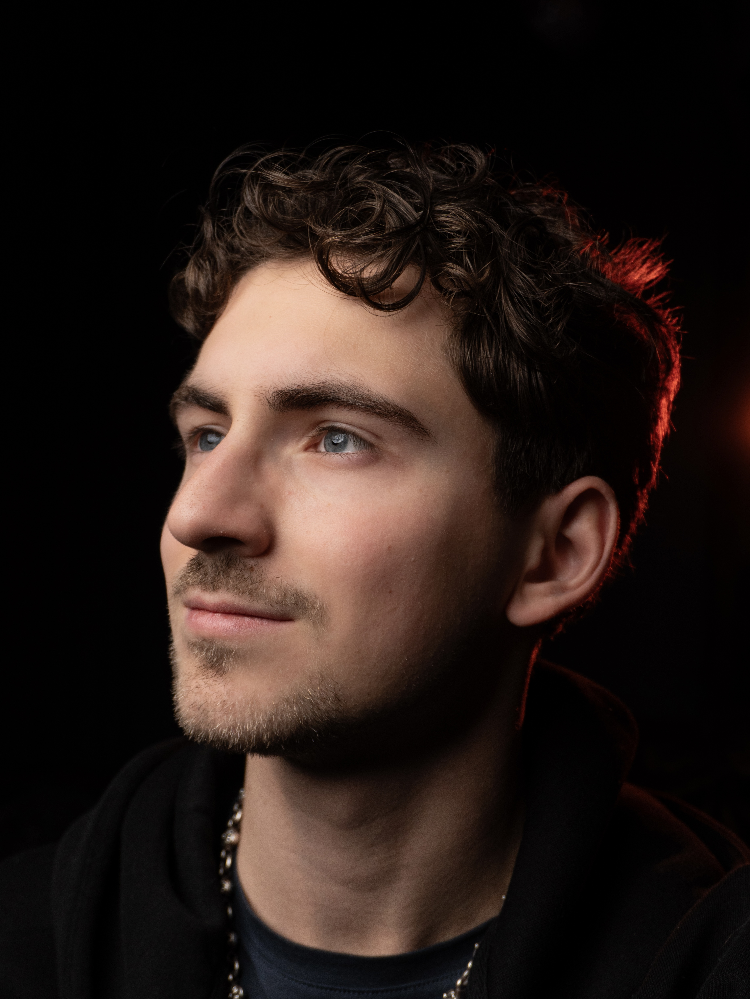

Wir sind Vivix.
Ein Team aus Strategie, Produktion und Postproduktion – spezialisiert auf Social Media Videos, die Vertrauen aufbauen und messbare Anfragen auslösen.
Von Premium-Produktionen zu Performance-Kurzfilmen
Vivix ist aus einer einfachen Realität entstanden: Die meisten Unternehmen brauchen keinen „mehr Content“ – sie brauchen Content, der wirkt. Seit über 5 Jahren produzieren wir Videos – zuerst für Immobilien, später für Events, Personal Brands und Produkt-Content. In dieser Zeit haben wir gelernt, was visuell überzeugt – und vor allem, wie man Aufmerksamkeit so aufbaut, dass daraus Vertrauen entsteht.
Heute bündeln wir diese Erfahrung in einem klaren Setup: Lead-fokussierte Reels & Ads, die nicht nur gut aussehen, sondern Menschen in den nächsten Schritt bringen (Anfrage, Termin, Beratung).


Kein Freelancer-Glücksspiel. Ein Team mit System.
Viele Produktionen hängen an einer Person. Sobald es stressig wird, bricht Output ein. Bei Vivix ist das anders: Wir arbeiten als eingespieltes Team – mit klaren Rollen, Workflows und Qualitätskontrolle.
- verlässlicher Output
- gleichbleibender Premium-Standard
- saubere Prozesse
- skalierbare Umsetzung
Kurz: Wir liefern nicht „ein paar Videos“. Wir bauen eine Video-Engine, die durchhält.
Erfahrung aus großen Brands & großen Momenten
Wir haben Produktionen umgesetzt, die hohe Ansprüche an Qualität, Geschwindigkeit und Auftreten haben – von Hospitality und Automotive bis hin zu Events und Popkultur.
- Monaco / Formel 1 (Event-Umfeld)
- Waldorf Astoria Berlin
- Automotive-Projekte (u. a. Bentley / BMW)
- Inhalte im Umfeld von Künstlern & Personal Brands (z. B. Luciano)
Diese Production-DNA ist die Basis – der Fokus heute ist klar: Kurzform-Content mit Performance-Logik.

Arseny Lysenko — Founder
Arseny hat vor über fünf Jahren begonnen, Social Media Videos zu produzieren – zuerst im Bereich Immobilien. Von dort entwickelte sich der Weg schnell weiter: Events, Personal Brands, Produktvideos, Kampagnen und hochwertige Kurzformate.
Was ihn auszeichnet, ist die Kombination aus cinematischer Bildsprache und einem klaren Verständnis dafür, wie Social Media wirklich funktioniert: Aufmerksamkeit entsteht nicht zufällig – sie wird gebaut. Und genau daraus ist Vivix entstanden: aus dem Anspruch, Ästhetik mit Wirkung zu verbinden.
Wie wir arbeiten
Klarer Prozess. Wenig Aufwand für Ihr Team.
Analyse & Content-Angles
Was zieht in Ihrer Zielgruppe wirklich? Wir definieren Themen und Hooks, die funktionieren.
Skripte & Hooks
Klare Aussagen statt improvisierter Kamera-Momente. Jedes Skript folgt einer Performance-Struktur.
Production
Effizienter Dreh mit Premium-Setup. Wir sorgen für professionelles Licht, Ton und Führung vor der Kamera.
Postproduktion & Delivery
Schnitt, Captions, Motion, Color – ready to post. Sie erhalten fertige Assets, die performen.
Wollen wir Ihnen unseren Standard in einem Probe-Reel zeigen?
Wir produzieren ein kostenloses Probe-Reel, damit Sie sofort sehen, wie Vivix aussieht – schnell, sauber und ohne Risiko.